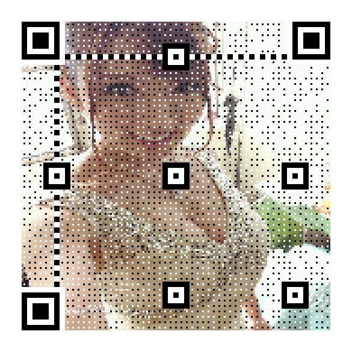

上次玩数独（旁友数独会伐啦？python秒解数独了解下伐啦？）的事情给老王气的……这次我直接掏出了照片，看看他的反应。
小胖这次要人码结合，看看他闹哪样。
那作为一名合格的程序员，怎么能不懂二维码是如何生成，如何解析，如何玩耍的呢？废话不多说，咱们今天就用Python来玩玩这个人码合一。
pip install qrcode
pip install myqr
pip install zxing首先我们来生成一个 “Hello World”。
import qrcode
def first_demo():
# 存储的字符串
qr = qrcode.make('Hello World')
qr.get_image().show()通过上面的步骤就完成了这个经典入门，拿出你的手机，用微信、QQ扫码，就会出现“Hello World”字眼，有没有勾起你初学Python的回忆呢。
刚才只是小试牛刀，我们来一个进阶，把生成的二维码保存到本地。
import qrcode
def second_demo():
text = 'Python专栏'
img = qrcode.make(text)
# 需要传一个参数 文件名
img.save('qr.png')
img.show()我公众号二维码大家应该很熟悉了吧，上面步骤生成的都是纯二维码，不符合我们的气质。接下来我要使用qrcode库生成带有内嵌图片的二维码。
from PIL import Image
import qrcode
def create_icon_qrcode():
qr = qrcode.QRCode(
# 二维码size尺寸大小。官方称为version
version=1,
# 二维码错误处理级别，有四种方式，稍后给出解释
error_correction=qrcode.constants.ERROR_CORRECT_H,
# 二维码图片的大小
box_size=10,
# 二维码白色边框的大小
border=2
)
# 添加数据
qr.add_data('小可爱你好，我是波多野结衣老湿')
# 填充数据
qr.make(fit=True)
# 生成二维码图片 指定填充颜色 指定背景颜色
img = qr.make_image(fill_color='grey',back_color='white')
# 得到生成的二维码图片的宽，高
img_w,img_h = img.size
# 添加图片到二维码中
# 使用pillow的Image打开图片
icon = Image.open('girl.jpg')
# 设置icon的大小,为二维码图片大小的6分之一
factor = 3
size_w = img_w // factor
size_h = img_h // factor
# 得到icon图片的大小
icon_w,icon_h = icon.size
# 只有当我们icon图片的大小超过了二维码图片的3分之一的时候，才对icon图片大小重新定义大小。
if icon_w > size_w:
icon_w = size_w
if icon_h > size_h:
icon_h = size_h
# 重新设置icon的尺寸
icon = icon.resize((icon_w,icon_h),Image.ANTIALIAS)
# 得到在二维码中显示的位置，坐标。
w = (img_w - icon_w) // 2
h = (img_h - icon_h) // 2
img.paste(icon,(w,h),mask=None)
img.save('girl.png')这里说一下version参数和error_correction参数：
通过上面的步骤，就生成了一张灰色背景填充的二维码，最最核心的中间部分……她是谁？
github地址： https://github.com/lincolnloop/python-qrcode
上面就是qrcode库的基本使用。接下来再介绍一下MyQr库。这个库就相当强大，强大到可以使用图片作为二维码的背景，甚至是动态图。
import os
from MyQR import myqr
def myqr_demo():
# 注意，这里的字符串不能出现中文，只能以下这些
# supported_chars = r"0123456789ABCDEFGHIJKLMNOPQRSTUVWXYZabcdefghijklmnopqrstuvwxyz ··,.:;+-*/\~!@#$%^&`'=<>[]()?_{}|"
words = 'hello world'
# 调用myqr.run方法，就能够生成图片了。返回三个值，二维码的version，纠错级别，二维码的完整路径
version, level, qr_name = myqr.run(
# 存放的数据
words=words,
# 二维码size
version=10,
# 选取的背景图片
picture='girl.jpg',
# 是否为彩色。如果为False，那么就是黑白的
colorized=True,
# 保存到本地的名字
save_name='girl_img.png',
# 保存二维码的目录,这里就是当前目录。默认就是这个
save_dir=os.getcwd()
)
print(version,level,qr_name)执行以上代码，我们就可以生成一张以我们图片作为背景的二维码。

如果需要将动态图作为背景图，其实也和正常的背景图类似，只需要写入背景图的文件名就行了，然后保存图片的时候，将二维码的后缀名改成gif即可.
github地址: https://github.com/sylnsfar/qrcode
这里简单的比较一下这两个库吧
上面我们只说了如何生成二维码图片。接下来介绍下如何解析二维码中的信息。
import zxing
def parse_qrcode(filename):
reader = zxing.BarCodeReader()
barcode = reader.decode(filename)
print(barcode.parsed)短短的几行代码，就能解析出复杂而又简单的二维码，并且得到里面的详细数据。
注意：如果二维码中的数据包含中文，那么应该会报这样的错误。UnicodeDecodeError: 'utf-8' codec can't decode byte 0xc0 in position 0: invalid start byte 这个时候只需要修改一下这个库的源码就行了。
修改位置在zxing包下面的 __init__.py 文件中第81行代码处。
原来是这样的
raw = raw[:-1].decode()
parsed = parsed[:-1].decode()
return cls(format, type, raw, parsed, points)需要修改为下面这样
raw = raw[:-1].decode(encoding='gbk')
parsed = parsed[:-1].decode(encoding='gbk')
return cls(format, type, raw, parsed, points)这样就不会出错了。
这样，我们就成功的对二维码进行解析了。
本文全套代码已上传至Github：https://github.com/MiracleYoung/You-are-Pythonista/tree/master/PythonExercise/App/QRcode
更多好玩有趣的Python内容，关注公众号「Python专栏」